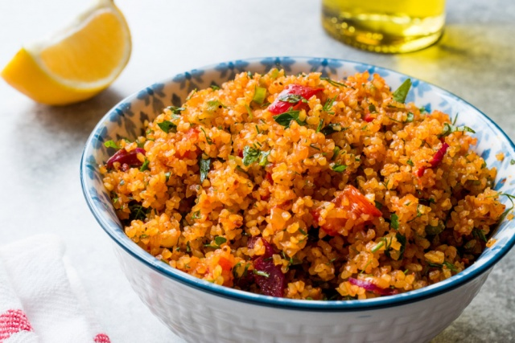

Kısır Nerenin Yemeğidir.

Türkiye’de hemen hemen her evde kısır yemek mümkün. Bu basit ve lezzetli tarifi bilmeyen yok. Ancak düşündünüz mü hiç kısır tarifi ilk olarak hangi yörede çıkmış? Doğuda da batıda da sevilerek tüketilen bu yiyecek aslen nereli?
Kısır aslında tam bir Türkiyeli! Arap mutfağındaki Tabule salatası ve Akdeniz ülkelerinde sofralardan eksik edilmeyen kuskus ile akraba sayılır. Her ne kadar hemen hemen tüm Türkiye’de yense de özellikle Adana, Osmaniye, Antalya, Mersin, Konya, Karaman, Kilis, Gaziantep, Antakya ve Kahramanmaraş’ta meşhurdur.